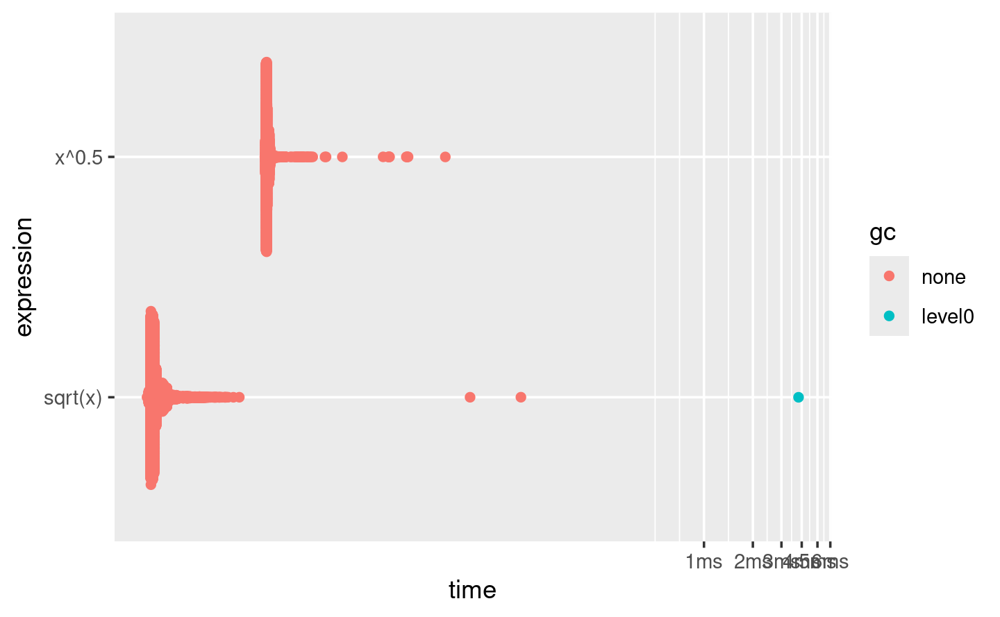

library(profvis)
library(bench)23 Medición de desempeño
23.1 Introducción
Los programadores pierden enormes cantidades de tiempo pensando o preocupándose por la velocidad de las partes no críticas de sus programas, y estos intentos de eficiencia en realidad tienen un fuerte impacto negativo cuando se consideran la depuración y el mantenimiento.
— Donald Knuth
Antes de que pueda hacer que su código sea más rápido, primero debe averiguar qué lo hace lento. Esto suena fácil, pero no lo es. Incluso los programadores experimentados tienen dificultades para identificar cuellos de botella en su código. Entonces, en lugar de confiar en su intuición, debe perfilar su código: mida el tiempo de ejecución de cada línea de código usando entradas realistas.
Una vez que haya identificado los cuellos de botella, deberá experimentar cuidadosamente con alternativas para encontrar un código más rápido que aún sea equivalente. En el Capítulo 24 aprenderá un montón de formas de acelerar el código, pero primero necesita aprender cómo microbenchmark para que pueda medir con precisión la diferencia en el rendimiento.
Estructura
La Sección 23.2 le muestra cómo usar las herramientas de creación de perfiles para profundizar exactamente en lo que hace que el código sea lento.
La Sección 23.3 muestra cómo usar microbenchmarking para explorar implementaciones alternativas y descubrir exactamente cuál es la más rápida.
Requisitos
Usaremos profvis para creación de perfiles y bench para microbenchmarking.
23.2 Perfiles
En todos los lenguajes de programación, la herramienta principal utilizada para comprender el rendimiento del código es el generador de perfiles. Hay varios tipos diferentes de perfiladores, pero R usa un tipo bastante simple llamado perfilador estadístico o de muestreo. Un generador de perfiles de muestreo detiene la ejecución del código cada pocos milisegundos y registra la pila de llamadas (es decir, qué función se está ejecutando actualmente y la función que llamó a la función, etc.). Por ejemplo, considere f(), a continuación:
f <- function() {
pause(0.1)
g()
h()
}
g <- function() {
pause(0.1)
h()
}
h <- function() {
pause(0.1)
}(Utilizo profvis::pause() en lugar de Sys.sleep() porque Sys.sleep() no aparece en las salidas de creación de perfiles porque, por lo que R puede decir, no consume tiempo de cálculo .)
Si perfiláramos la ejecución de f(), deteniendo la ejecución del código cada 0.1 s, veríamos un perfil como este:
"pause" "f"
"pause" "g" "f"
"pause" "h" "g" "f"
"pause" "h" "f"Cada línea representa un “tick” del generador de perfiles (0,1 s en este caso), y las llamadas a funciones se registran de derecha a izquierda: la primera línea muestra f() llamando a pause(). Muestra que el código gasta 0.1 s ejecutando f(), luego 0.2 s ejecutando g(), luego 0.1 s ejecutando h().
Si realmente perfilamos f(), usando utils::Rprof() como en el código de abajo, es poco probable que obtengamos un resultado tan claro.
tmp <- tempfile()
Rprof(tmp, interval = 0.1)
f()
Rprof(NULL)
writeLines(readLines(tmp))
#> sample.interval=100000
#> "pause" "g" "f"
#> "pause" "h" "g" "f"
#> "pause" "h" "f" Esto se debe a que todos los perfiladores deben hacer un equilibrio fundamental entre precisión y rendimiento. El compromiso que se obtiene al usar un generador de perfiles de muestreo solo tiene un impacto mínimo en el rendimiento, pero es fundamentalmente estocástico porque existe cierta variabilidad tanto en la precisión del temporizador como en el tiempo que toma cada operación. Eso significa que cada vez que hagas un perfil obtendrás una respuesta ligeramente diferente. Afortunadamente, la variabilidad afecta más a las funciones que tardan muy poco en ejecutarse, que también son las funciones de menor interés.
23.2.1 Visualización de perfiles
La resolución de creación de perfiles predeterminada es bastante pequeña, por lo que si su función tarda incluso unos segundos, generará cientos de muestras. Eso crece rápidamente más allá de nuestra capacidad de mirar directamente, así que en lugar de usar utils::Rprof() usaremos el paquete profvis para visualizar agregados. profvis también conecta los datos de creación de perfiles con el código fuente subyacente, lo que facilita la creación de un modelo mental de lo que necesita cambiar. Si encuentra que profvis no ayuda con su código, puede probar una de las otras opciones como utils::summaryRprof() o el paquete proftools (Tierney y Jarjour 2016).
Hay dos formas de usar profvis:
Desde el menú Profile en RStudio.
Con
profvis::profvis(). Recomiendo almacenar su código en un archivo separado ysource(); esto garantizará que obtenga la mejor conexión entre los datos de creación de perfiles y el código fuente.source("profiling-example.R") profvis(f())
Una vez completada la creación de perfiles, profvis abrirá un documento HTML interactivo que le permitirá explorar los resultados. Hay dos paneles, como se muestra en la Figura 23.1.

El panel superior muestra el código fuente, superpuesto con gráficos de barras para memoria y tiempo de ejecución para cada línea de código. Aquí me centraré en el tiempo y volveremos a la memoria en breve. Esta pantalla le brinda una buena idea general de los cuellos de botella, pero no siempre lo ayuda a identificar con precisión la causa. Aquí, por ejemplo, puedes ver que h() tarda 150 ms, el doble que g(); eso no se debe a que la función sea más lenta, sino a que se llama con el doble de frecuencia.
El panel inferior muestra un gráfico de llamas que muestra la pila de llamadas completa. Esto le permite ver la secuencia completa de llamadas que conducen a cada función, lo que le permite ver que h() se llama desde dos lugares diferentes. En esta pantalla, puede pasar el mouse sobre las llamadas individuales para obtener más información y ver la línea correspondiente del código fuente, como en la Figura 23.2.

Alternativamente, puede usar la pestaña de datos, Figura 23.3 le permite sumergirse de forma interactiva en el árbol de datos de rendimiento. Esta es básicamente la misma pantalla que el gráfico de llama (girado 90 grados), pero es más útil cuando tiene pilas de llamadas muy grandes o muy anidadas porque puede optar por hacer zoom de forma interactiva solo en los componentes seleccionados.

23.2.2 Perfilado de memoria
Hay una entrada especial en el gráfico de llamas que no corresponde a su código: <GC>, que indica que el recolector de basura se está ejecutando. Si <GC> toma mucho tiempo, generalmente es una indicación de que está creando muchos objetos de corta duración. Por ejemplo, tome este pequeño fragmento de código:
x <- integer()
for (i in 1:1e4) {
x <- c(x, i)
}Si lo perfilas, verás que la mayor parte del tiempo lo pasa en el recolector de basura, Figura 23.4.

Cuando vea que el recolector de elementos no utilizados ocupa mucho tiempo en su propio código, a menudo puede descubrir el origen del problema observando la columna de memoria: verá una línea donde se asignan grandes cantidades de memoria (el barra de la derecha) y liberada (la barra de la izquierda). Aquí surge el problema debido a la copia al modificar (Sección 2.3): cada iteración del bucle crea otra copia de x. Aprenderá estrategias para resolver este tipo de problema en la Sección 24.6.
23.2.3 Limitaciones
Hay algunas otras limitaciones para la creación de perfiles:
La generación de perfiles no se extiende al código C. Puede ver si su código R llama al código C/C++ pero no qué funciones se llaman dentro de su código C/C++. Desafortunadamente, las herramientas para generar perfiles de código compilado están más allá del alcance de este libro; Comience mirando https://github.com/r-prof/jointprof.
Si está haciendo mucha programación funcional con funciones anónimas, puede ser difícil averiguar exactamente qué función se está llamando. La forma más fácil de evitar esto es nombrar sus funciones.
La evaluación perezosa significa que los argumentos a menudo se evalúan dentro de otra función, y esto complica la pila de llamadas (Sección 7.5.2). Desafortunadamente, el generador de perfiles de R no almacena suficiente información para desenredar la evaluación perezosa, por lo que en el siguiente código, la generación de perfiles haría que pareciera que
i()fue llamado porj()porque el argumento no se evalúa hasta que lo necesitaj().i <- function() { pause(0.1) 10 } j <- function(x) { x + 10 } j(i())Si esto es confuso, use
force()(Sección 10.2.3) para forzar que el cálculo ocurra antes.
23.2.4 Ejercicios
Perfila la siguiente función con
torture = 10. ¿Qué es sorprendente? Lea el código fuente derm()para averiguar qué está pasando.f <- function(n = 1e5) { x <- rep(1, n) rm(x) }
23.3 Microbenchmark
Un microbenchmark es una medida del rendimiento de un fragmento de código muy pequeño, algo que puede tardar milisegundos (ms), microsegundos (µs) o nanosegundos (ns) en ejecutarse. Los microbenchmarks son útiles para comparar pequeños fragmentos de código para tareas específicas. Tenga mucho cuidado al generalizar los resultados de los micropuntos de referencia al código real: las diferencias observadas en los micropuntos de referencia normalmente estarán dominadas por efectos de orden superior en el código real; una comprensión profunda de la física subatómica no es muy útil al hornear.
Una gran herramienta para microbenchmarking en R es el paquete de banco (Hester 2018). El paquete de banco utiliza un temporizador de alta precisión, lo que permite comparar operaciones que solo toman una pequeña cantidad de tiempo. Por ejemplo, el siguiente código compara la velocidad de dos enfoques para calcular una raíz cuadrada.
x <- runif(100)
(lb <- bench::mark(
sqrt(x),
x ^ 0.5
))
#> # A tibble: 2 × 6
#> expression min median `itr/sec` mem_alloc `gc/sec`
#> <bch:expr> <bch:tm> <bch:tm> <dbl> <bch:byt> <dbl>
#> 1 sqrt(x) 379.98ns 410.01ns 2292903. 848B 229.
#> 2 x^0.5 1.98µs 2.02µs 487035. 848B 0De forma predeterminada, bench::mark() ejecuta cada expresión al menos una vez (min_iterations = 1) y, como máximo, las veces necesarias para tardar 0,5 s (min_time = 0,5). Comprueba que cada ejecución devuelve el mismo valor, que suele ser lo que desea microbenchmarking; si desea comparar la velocidad de las expresiones que devuelven valores diferentes, configure check = FALSE.
23.3.1 Resultados de bench::mark()
bench::mark() devuelve los resultados como un tibble, con una fila para cada expresión de entrada y las siguientes columnas:
min,mean,median,max, yitr/secresume el tiempo que tarda la expresión. Concéntrese en el mínimo (el mejor tiempo de ejecución posible) y la mediana (el tiempo típico). En este ejemplo, puede ver que usar la funciónsqrt()de propósito especial es más rápido que el operador de exponenciación general.Puedes visualizar la distribución de los tiempos individuales con
plot():plot(lb) #> Loading required namespace: tidyr
La distribución tiende a ser muy sesgada hacia la derecha (¡tenga en cuenta que el eje x ya está en una escala logarítmica!), razón por la cual debe evitar comparar medias. También verá a menudo multimodalidad porque su computadora está ejecutando algo más en segundo plano.
mem_allocte dice la cantidad de memoria asignada por la primera ejecución, yn_gc()te dice el número total de recolecciones de basura en todas las ejecuciones. Estos son útiles para evaluar el uso de memoria de la expresión.n_itrytotal_timele dice cuántas veces se evaluó la expresión y cuánto tiempo tomó en total.n_itrsiempre será mayor que el parámetromin_iteration, ytotal_timesiempre será mayor que el parámetromin_time.result,memory,time, ygcson columnas de lista que almacenan los datos subyacentes sin procesar.
Debido a que el resultado es un tipo especial de tibble, puede usar [ para seleccionar solo las columnas más importantes. Lo haré con frecuencia en el próximo capítulo.
lb[c("expression", "min", "median", "itr/sec", "n_gc")]
#> # A tibble: 2 × 4
#> expression min median `itr/sec`
#> <bch:expr> <bch:tm> <bch:tm> <dbl>
#> 1 sqrt(x) 379.98ns 410.01ns 2292903.
#> 2 x^0.5 1.98µs 2.02µs 487035.23.3.2 Interpretación de resultados
Al igual que con todos los micropuntos de referencia, preste mucha atención a las unidades: aquí, cada cálculo toma alrededor de 380 ns, 380 mil millonésimas de segundo. Para ayudar a calibrar el impacto de un micropunto de referencia en el tiempo de ejecución, es útil pensar cuántas veces debe ejecutarse una función antes de que tarde un segundo. Si un microbenchmark toma:
- 1 ms, entonces mil llamadas toman un segundo.
- 1 µs, luego un millón de llamadas toman un segundo.
- 1 ns, luego mil millones de llamadas toman un segundo.
La función sqrt() toma aproximadamente 380 ns, o 0.38 µs, para calcular las raíces cuadradas de 100 números. Eso significa que si repitió la operación un millón de veces, tomaría 0.38 s y, por lo tanto, es poco probable que cambiar la forma en que calcula la raíz cuadrada afecte significativamente el código real. Esta es la razón por la que debe tener cuidado al generalizar los resultados de microbenchmarking.
23.3.3 Ejercicios
En lugar de usar
bench::mark(), podrías usar la función integradasystem.time(). Perosystem.time()es mucho menos preciso, por lo que deberá repetir cada operación muchas veces con un ciclo y luego dividir para encontrar el tiempo promedio de cada operación, como en el código a continuación.n <- 1e6 system.time(for (i in 1:n) sqrt(x)) / n system.time(for (i in 1:n) x ^ 0.5) / n¿Cómo se comparan las estimaciones de
system.time()con las debench::mark()? ¿Por qué son diferentes?Aquí hay otras dos formas de calcular la raíz cuadrada de un vector. ¿Cuál crees que será más rápido? ¿Cuál será más lento? Utilice microbenchmarking para probar sus respuestas.
x ^ (1 / 2) exp(log(x) / 2)